Partie II - Mémoire Épisodique
Partie de l’examen où on regarde et explique les données d’une expérience, puis synthèse où on rédige quelque chose sur un thème. Exemples sur moodle.
Plan :
- La mémoire épisodique : définitions
- Quelques modèles
- Un point de départ : rappel et reconnaissance
- L’encodage et le contexte
Introduction
i. La mémoire épisodique : définitions
Important : l’organisation de la MLT qu’on connaît n’est pas un modèle, car ça ne fait pas de prédictions.
Les définitions de la mémoire :
- Basé sur les contenus : la mémoire épisodique et sémantique sont 2 stocks différents : le dernier de choses générales, et le premier, un stock des évènements personnellement vécus.
- Basé sur les processus de récupération, particulièrement basé sur les sentiments liés à la récupération. Proposé par Tulving, qu’on a avec la mémoire épisodique la conscience autonoétique qui nous fait voyager dans le temps. La mémoire sémantique vient elle à l’esprit sans effort, c’est la connaissance noétique. À ce niveau on parle de conscience plutôt que de mémoire pour la qualifier.
Mémoire implicite/explicite se différencie sur le mode de récupération. Incident revient au test de mémoire indirect : dans un test explicite, on demande de rappeler des mots appris dans une phase précédente. Implicite on fait implicite quois.
ii. Quelques modèles
3 gros processus dans la mémoire :
- Encodage
- Stockage
- Récupération
Mais pose problème pour la falsification : pour pouvoir mesurer l’encodage il faut passer aussi par les 3 autres étapes.
Test d’apprentissage et rétention des abbréviations sur un enfant, CJ, qui a une tumeur qui a affecté son hippocampe et sa mémoire épisodique. Sa sœur était le contrôle. On trouve un résultat surprenant : on a une courbe typique pour la sœur, et une semaine 2 elle se souvient de la moitié de la liste. Mais pour le frère, il a autant d’informations à la fin de la session 1 qu’au début de la session 2. Cependant son apprentissage est beaucoup plus lent. Il peut tout de même maîtriser la liste que le montre les prochaines sessions. Et 5 ans plus tard, il se souvient beaucoup mieux que sa sœur.

Si on a pas les infos de la phase d’encodage, on va prendre les items comme jsute des connaissances, qui donne un maintien très stable car c’est de la mémoire sémantique et non épisodique. Ça explique les résultats précédents, il apprendrait tout avec la mémoire sémantique.
Modèle d’Atkinson & Shiffrin :
Modèle abandonné mais toujours utilisé par certaines personnes. C’est très inspiré des ordinateurs : on à un transferet d’informations des registres sensoriels vers la MLT. Organisation basée sur la durée de stockage.
Ce modèle a été appuyé par l’observation de patients amnésiques déficients en MCT, qui ne pouvaient pas encoder en MLT. Mais d’autre patient.es ont forcé la réfutation de ce modèle, car il existe une double dissociation de patient.es ayant des troubles de la MLT pouvant faire tests de MCT mais pas MLT et inversement.

- HM: MCT intacte, mais pas MLT, ce qui correspond très bien avec transfert d’informations, car il pourrait pas mettre dans le stock permanent
- Patient KF à eu l’inverse
Il y aurait donc un encodage parallèle, et non sériel, pour la MCT et la MLT. C’est aussi probablement le cas pour la mémoire épisodique et sémantique. Ce modèle est malgré tout utile en clinique.
iii. Un point de départ : rappel et reconnaissance
La dyslexie à un profil très similaire : scores très bas en MCT chez certain patient, donc y’a pas qu’une question de stockage et registre. On observe bien ça dans les expériences de rappel de longues listes montrant les effets de primauté et récence.
Donc la mémoire n’est pas organisée comme un ordinateur. Son modèle préféré et Bastin, complexe, qui montre les entrées différentes.
Maladie d’Alzheimer, qui est récemment étudiée par les neuropsychologues, était considérée comme une maladie faisant oublier les informations de manière accélérée, d’une conversation à l’autre. Cette vision a été testée et mise à l’épreuve avec nos modèles, mais pour expliquer ça il faut comprendre le fonctionnement de la mémoire lors du rappel de liste de mots :
- Effet de récence : mémoire primaire (MCT)
- Effet de primauté : mémoire secondaire (MLT)
L’attribution de ces mécanismes est justifié par la forme que prennent les réponses des participants lors de ces tâches : les mots récents sont répétés dans l’ordre (fonctionnement de la boucle phonologique de la MCT), alors que ce n’est pas le cas pour les mots de primauté.
2 groupes de personnes avec Alzheimer selon la sévérité du troubles. On remarque en général un oublie accéléré. On voit surtout que part rapport au contrôle, le rappel différé est altéré, et surtout la proportion de MCT utilisée par ces patients est forte, et il y a un plafond à l’utilisation de la MLT qui est autant utilisée dans les tˆåches mixtes que dans les tâches de MLT pure.

La mémoire de travail
Baddeley ajoute une composante dans son modèle, de buffer épisodique, pour exlpiquer quelque chose qui n’était pas possible avant. Quand on regarde un film, il est nécessaire de stocker le nom des personnages. On ne peut pas le faire dans la MCT à cause de la durée du film, et pourtant on y arrive. On aurait donc un stockage des informations temporaires multimodales, épisodiques car dans un moment spécifique, stocké quelque part entre MCT et MLT. Buffer car temporaire.

iv. L’encodage et le contexte
Pour Craik et Tulving, l’apprentissage incident se fait quand il n’y a pas de consigne explicite d’encoder. Plus il y a d’élaboration sémantique, plus on apprend. On a uen combinaison de la mémoire implicite et exlpicite dans cet effet
Niveaux de traitements de Craik et Tuvling, propose que traiter des informations laisse des traces en MLT. Paradigme a été très important, manipulation d’encodage pour mesurer le résultat où on donne de l’argent je crois je sais pas trop.
Il y a 20 ans, beaucoup d’études s’intéressaient à l’évolution de la mémoire. Méthodes simples et élégantes, mais pas les conclusions. Il y a phase d’encodage, mais au lieu de demander des taches comme “est-ce que ce mot rime avec un autre” etc., on demande aux participants si l’objet dans la liste est utile pour la survie. On raconte une histoire où on doit survivre dans la savanne sans rien, et à ce moment on présente une liste de choses, et pour chacune on doit dire si c’est utile ou pas. Performance plus grande quand on demande si c’est des mots utiles pour la survie que non je crois. On s’est servi de ces résultats comme preuve évolutionnaire de l’utilité de la mémoire épisodique
Modèle de la trace mnésique : si on a suffisamment d’activation, on peut reconnaître une information, et si on en a encore plus, on peut le rappeler.
Pour tous types de mémoire, on a la disponibilité de quelque chose quelque part dans le cerveau, et accessibilité nécessaire (+ fort est + difficile).
| Disponibilité | Accessibilité | |
|---|---|---|
| Mémoire implicite | Oui | Un peu - comportement - sans conscience |
| Reconnaissance | Oui | Fort |
| Rappel libre | Oui | Très fort |
On a un modèle qui date des annés 60 génération / reconnaissance. Dans le rappel, on produit spontanément des informations pertinentes et plausibles, puis on identifie une information comme anciennce dans la reconnaissance. La reconnaissanc est toujours mieux que la reconnaissance, et si on observe l’inverse, faut tout revoir.
4 phases dans l’expérience de Tulving et Thomson 1973 :
- Phase d’encodage : paires de mots (“hope HIGH”)
- Génération : indice de mots très proches, comme “how” pour “high”, “lake” pour “water”
- Reconnaissance : on montre les mots et demande d’entourer les mots si vu pendant la phase d’encodage. 24% de ces mots sont entourés.
- Rappel : indicee, avec indices de la premières phases
Contexte est donc important pour la mémoire épisodique : le chevauchement entre encodage et test favorise les performances.
1. La familiarité
Courbes ROC seront probablement à l’examen
1.1. Contexte théorique
1.1.1. Rappel théorique
On va voir la familiarité, sur quoi on se base pour dire qu’on a déjà vu quelque chose. Il y a deux mécanismes principaux :
- Recollection : récupération consciente d’un souvenir dans son contexte
- Familiarité : processus automatique qui permet la reconnaissance sans récupération de détails contextuels associés
Cette distinction est proposée pour la première fois par Adams (1967), qui cherchait à parler de processus perceptuels et conceptuels :
- Différents processus perceptuels qui permettent de capter des signaux er faire du matching, comparer ce qu’on est en train de vior à ce qu’on a en mémoire, et si c’est fait, on a la familiarité. C’est sensé être très rapide, ascendant, de bas niveau, sans contexte.
- Processus conceptuels : de haut niveau, conscient, raisonnement, etc.
Yonelinas (2002) propose :
- Que la familiarité est une sensation subjective d’avoir déjà vu le stimulus, sans récupération explicite du contexte initial d’apprentissage. Automatique, rapide, implicite, basé sur la force mnésique, et contient donc des degrés de familiarité
- Que la récupération est un rappel conscient et volontaire d’un évènement passé et de son contexte d’apprentissage. Il est controlé, lent, détaillé, et se base sur un seuil de récupération d’informations qualitatives / associatives. On ne se souvient ou se souvient pas
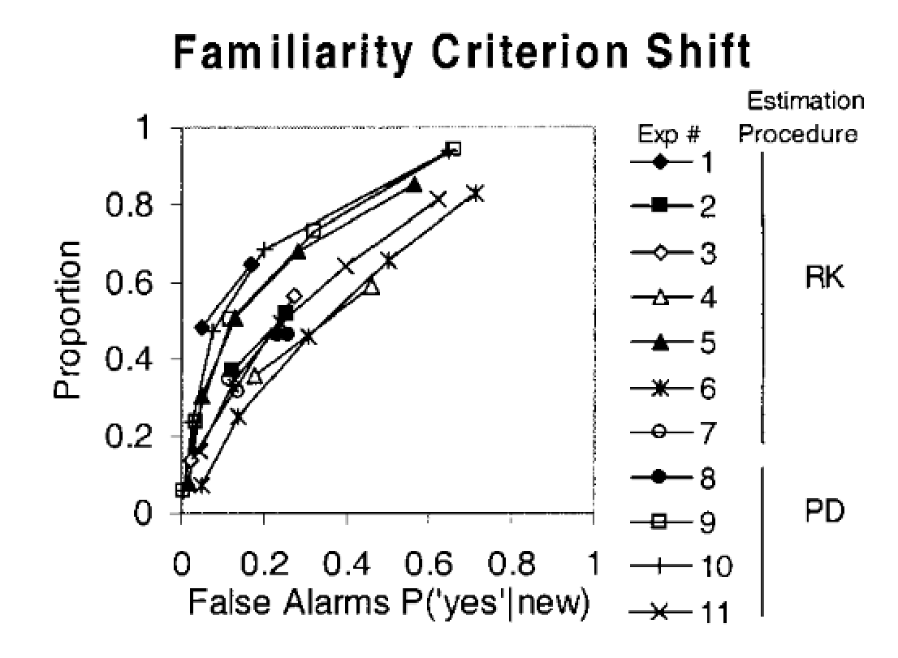
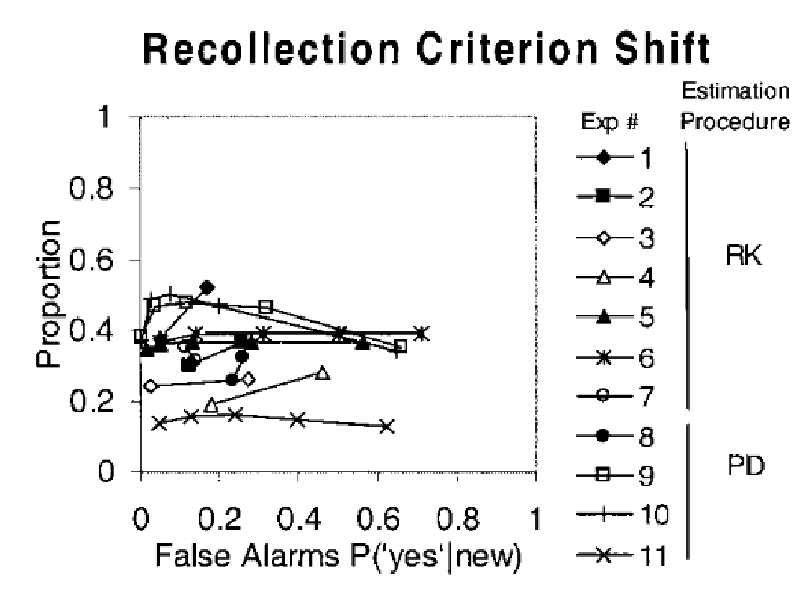
1.1.2. Modèle intégratif de la mémoire
Modèle intégratif de la mémoire à 2 composants clé :
- Système représentationnel :
- Stocke et reconstruit les traces mnésiques. Dommage de ce système = dégradation du contenu de la mémoire
- contient les sous-systèmes “cœurs” qui encodent et stockent les représentations spécifiques
- Système d’attribution/attention :
- Plus haut niveau
- Module l’utlisation des traces mnésiques en fonction de la tâche, des objectifs
- Permet la réalisation des jugements explicites et la subjectivité des expériences
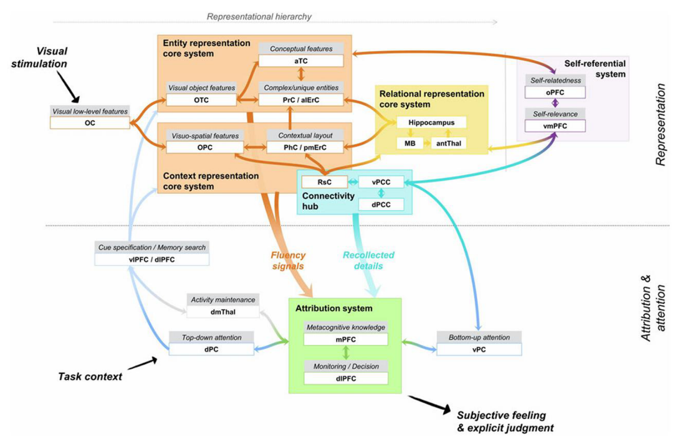
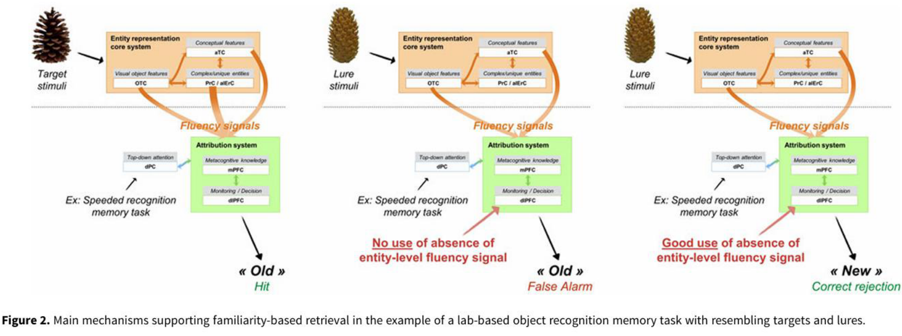
1.2. Corrélats neuronaux de la familiarité
Système cœur des entités (familiarité) : cortex périrhinal, enthorinal antolatéral, occipito-temporal et temporal antérieur (réseau distribué). Ce système intègre les traces en une représentation compelxe et unique, se distinguant d’autres représentation stockées
Système “cœur” relationnel (recollection) : centré dans l’hippocampe, subiculum, corps mamillaires et noyaux antérieurs du thalamus. Encodage rapide de représentations détaillée de l’item associé à l’information contextuelle.
1.3. Phénomènes quotidiens
1.3.1. Effet de simple exposition
Les signaux de fluence arrivent à nous, et le système de distribution doit faire une décision. Parler d’effet de simple exposition peut nous aider : la simple présentation d’un stimulus peut provoquer une préférence accrue vers celui-ci. Le modèle de fluence perceptive propose que la fluence est attribuée selon le contexte de la tâche ; et le modèle de fluence hédonique propose que l’expérience de fluence est considérée comme intrinsèquement plaisante.
On se questionne de l’influence de la familiarité inconsciente sur les attitudes surtout dns dans la reconnaissance consciente.
1.3.2. Boucher-dans-le-bus
Boucher-dans-le-bus est dû à rencontrer quelqu’un en dehors de son contexte, et retrouver le bon contexte est très dûr. C’est une expression de la spécificité de l’encodage.

On fait une étude où on voulait tester qu’est-ce qui change dans la spécificité d’encodage avec le vieillissement, sachant que les capacités évoquées déclinent avec l’âge. Tâche de Remember/Know avec phase d’apprentissage, puis phase de test où on demande si c’est totalement nouveau, si c’est un peu familier, ou s’il s’en souvient :
- Apprentissage : 48 images “visage + contexte”
- Test : 72 images (même visage + contexte; même visage dans contexte différent; nouveaux visage + contexte)
Prédictions :
- Personnes âgées moins performantes en recollection
- Récupération plus forte dans le même contexte en recollection
- Contraste plus favorable pour les jeunes en recollection
- Familiarité plus basse hors contexte surtout pour les âgés
Pas de différence significative pour les contextes chez les jeunes, pareil pour les âgées. Contexte différent ont familiairté plus forte chez les jeuens que chez personnes âgées qui perdent la notion de familiarité avec changement de contexte.
1.3.3. Phénomène de déja-vu
La familiarité représentationnelle est un résultat de match entre ce qu’on est en train de percevoir et des représentations stockées en mémoire. Dans l’effet de simple exposition, il y a bien un matching, donc familiairité représentationnelle. Ça créé une fluence, mais pas forcément de sensations phénoménologique de familiarité, mais par exemple de préférence.
Mais est-ce qu’on peut avoir l’un sans l’autre ? On peut manipuler sensation de fluence avec différentes tˆåches. On peut faire apprendre des listes de mots, puis ???. FIX:
Par exemple le changement de police peut jouer sur la familiarité à partir d’une différence perceptive. On peut interpréter à tord que police moins lisible = mot moins familier. Ça peut aussi se passer dans le déjà-vu, dont une théorie qui propose qu’il y a pas de représentation stockée dans le déclenchement de familiarité.
Donc dans l’effet de simple exposition il y a familiarité représentationnelle mais pas phénoménologique. Il y a les deux dans le boucher-dans-le-bus. Déjà-vu que phénoménologique.
Déjà-vu est défini “any subjectively inappropriate impression of amiliarity of a present moment with an undefine past”. Chris propose plutôt “the phenomenological e xperience of recognizing a current situation and the awareness that this feeling of recognition is inappropriate”.
FIX: oops j’ai pas écouté
2 familles de théories explicant l’origine du déjà-vu : bottom-up et top-down.
- Bottom-up : quelque chose matcherai vraiment dans l’environnemnet avec quelque chose en mémoire, mais trop diffuse pour vraiment déclencher reconnaissance
- Top-down : rien dans l’environnement, mais juste des phénomènes neuronaux spontanés para-hippocampiques
FIX: hopla j’écoute pas du tout
-## 4. Familiarité dans le contexte clinique
partie test oùl les participants revoyaient des scènes et objets déjà vues, test
2. La récollection
2.1. Contexte théorique
2.1.1. Modèle BIC
Le modèle “Binding of item and context” vient d’une revue de 30 études en neuroimagerie, cherchant des corrélats neuronaux derrière familiarité et récollection :
- Récollection : activité forte dans l’hippocampe et gyrus parahippocampique postérieur
- Familiarité : activité forte dans le gyrus parahippocampique antérieur (cortex périrhinal)
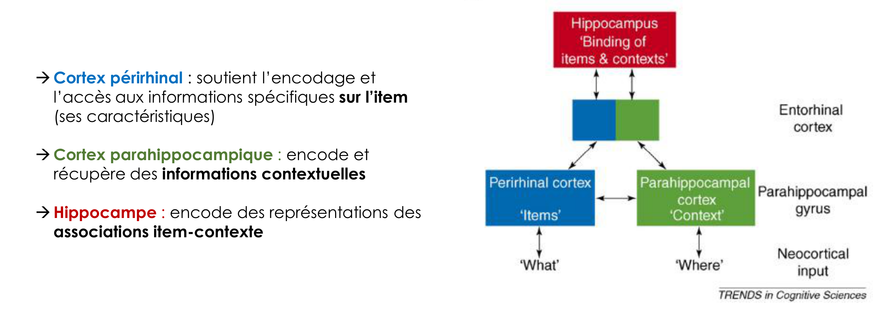
On va tester ce modèle avec une étude où les participants doivent faire du rappel indicé d’associations objet-scène. Dans la phase test, pour chaque indice, faire un jugement parmis quatre : nouveau, familier, rappel remémoré, autres détails remémorés sans rappel de l’associé. Deux phases :
- Apprentissage : 180 paires objets + scènes, 3.5 s par paires
- Test sous IRMf : 216 essais tests divisés en 6 blocs (indices : objets anciens, scènes anciennes, objet nouveaux, scènes nouvelles)
- Post-test: 144 essais similaires
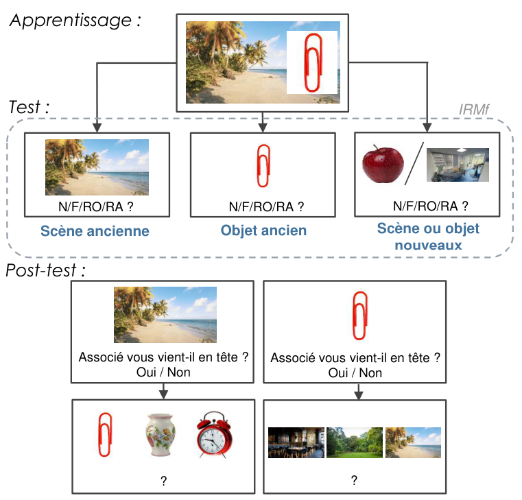
Résultats par région d’intérêt :
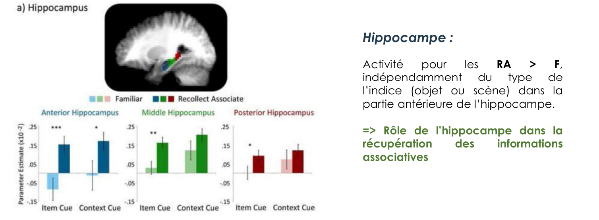
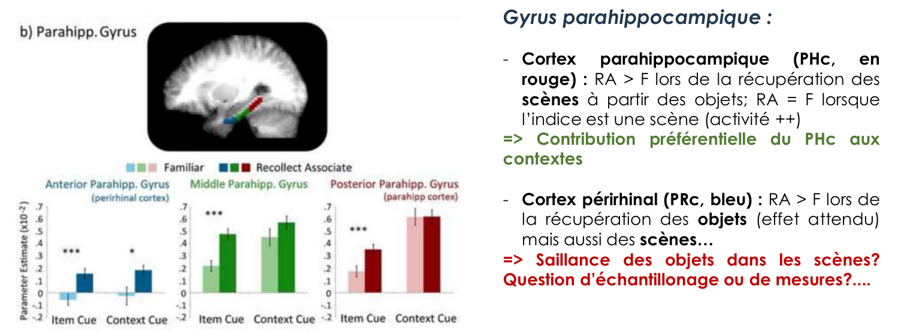
On voit que chaque objet avait sa propre scène. Mais ça ne ressemble pas à la vraie vie : on se retrouve souvent dans les mêmes contextes et on doit retrouver des informations dans ces mêmes contextes. Comme retrouver notre voiture sur un parking particulier. Donc comment on fait pour distinguer des souvenirs issus du même contexte ? Il peut se produire des interférences quand des souvenirs partagent des éléments de contextes.
2.1.2. Interférence et mémoire de source
L’interférence est le fait que des souvenirs partagent les mêmes indicse de récupération se font concurrence au moment du rappel, ce qui produit l’oublie ou des confusions. Elles sont rétroactives (RI) ou proactives (PI).
On va utiliser une tâche de rappel ou apprentissage par anticipation : dans un test de mémoire, on s’attend à des présentations des mots. Ici, on va devoir anticiper ce qu’il y aura par la suite : “est-ce que vous vous souvenez du mot qu’on a appris ?”, “non on n’a pas appris”, “ok normal c chat”, et on continue comme ça, et quand on refait un passage, on sait répondre vu qu’on a appris normalement. Au début, on n’a rien à anticiper, on a juste des trigrammes (“XCM”, “KTQ”…). On fait 5 passage pour chaque liste.
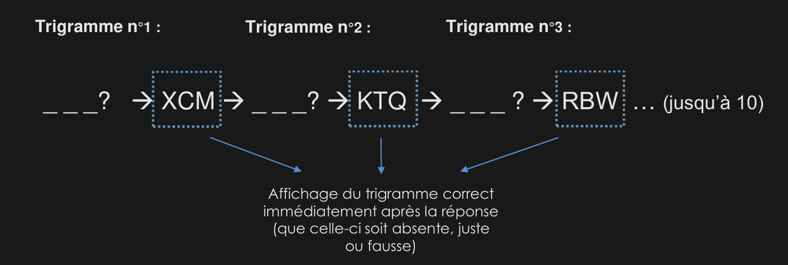
La similarité de deux types de listes apprises (A et B) est manipulée :
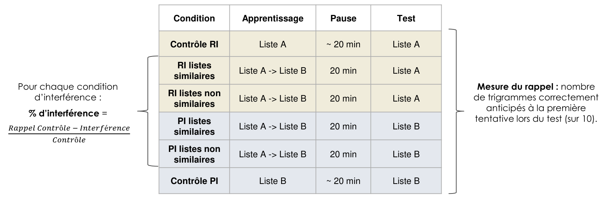
Résultats :
- Effet du type d’interférence, plus élevé dans la condition rétroactive
- Effet de la similarité des listes, plus élevé pour les listes similaires
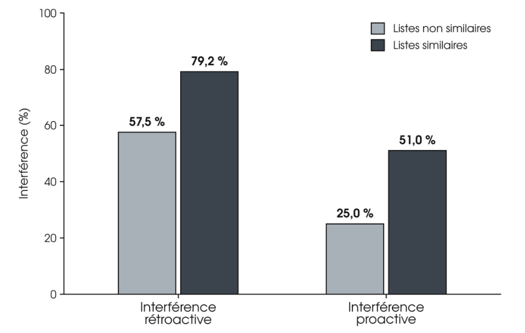
On propose que pour retrouver la source du souvenir, on doit retrouver le contexte. On fait une tâche de mémoire d’items (reconnaissance, familiarité et/ou récollection) puis tâche de mémoire de source (ou quand et comment l’ai-je vu, surtout récollection).
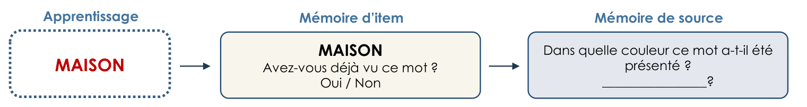
2.1.3. Modèle intégratif de la mémoire
On peut donc distinguer dans ce modèle comment distinguer des souvenirs contextuellement similaires :
- À l’encodage :
- Chaque entité reçoit une représentation unique, construite de façon distribuée et hiérarchique
- Chaque épisode (même proche d’un autre) reçoit sa propre trace dans l’hippocampe
- Au rappel :
- Récollection : une partie de l’épisode peut suffire à réactiver l’épisode complet
- Les détails de l’épisode sont ensuite relayés vers le système d’attribution
- Décision finale : le système d’attribution (cortex préfrontal) juge la pertinence des détails récupérés
Cependant ce qu’on a vu avant dépend de caractéristiques visuo-spatiales. Comment est-ce qu’on sépare les souvenirs en termes de temps ? On touche ici aux limites du modèle. On nous dit pas trop où est stocké le temps. Certains auteurs pensent qu’on a des régions spécifiques qui stockeraient le temps, d’autres pensent qu’il est distribué dans toutes les entités, qui permettrait de distinguer les souvenirs temporellement.
2.2. Paradigmes expérimentaux
2.2.1. Paradigme “remember/know” (Tulving, 1985; Gardiner, 1988)
On présente aux participants une liste de mots à mémoriser. Durant la phase de test, on leur demande d’identifier des items préalablement étudiés, parmis les distracteurs, selon deux types de jugements :
- “Remember” : indique que le participant se souvient du contexte
- “Know” : sentimenet de familiarité sans récupération explicite des détails contextuels précis
On va voir ce paradigme dans une étude de Davidson qui veut comparer les performances de familiarité entre participants sains et Parkinson. On fait une phase d’apprentissage de mots, puis de test après 10 minutes, où ils auto-évaluent leur réponse remember/know/new aux mots présentés. Récollection pas de différence, mais familiarité les sains ont des meilleurs scores. Mais il y a plusieurs problèmes avec cette étude, surtout avec le fait de faire une auto-évaluation des réponses :
- Classification subjective (mesure indirecte)
- Critères personnels variables
- Des patients cérébrolésés peuvent avoir des souvenirs très précis mais faux
- Suejts sains peuvent avoir des souvenirs vifs et détaillés qu’ils non jamais vus
2.2.2. Paradigme de “dissociation de processus” (Jacoby, 1991)
Dissociation de processus est une mesure un peu moins directe. On produit de contexte d’apprentissages différents, écrit ou verbalement. On présente aux participants deux lisets de mots consécutives :
- Phase d’encodage :
- Liste 1 : mots écrits présentés un par un
- Liste 2 : mots présentés verbalement
- Phase de reconnaissance : liset 1, liste 2, mots nouveaux
- Tâche d’inclusion : dire “ancien” pour tous les mots appris de la liste 1 et 2
- Tâche d’exclusion : dire “ancien” seulement pour les mots appris de la liste 2 (nécessite la récollection)
Utilisation de familiarité / récollection en fonction de la tâche et de la justesse :
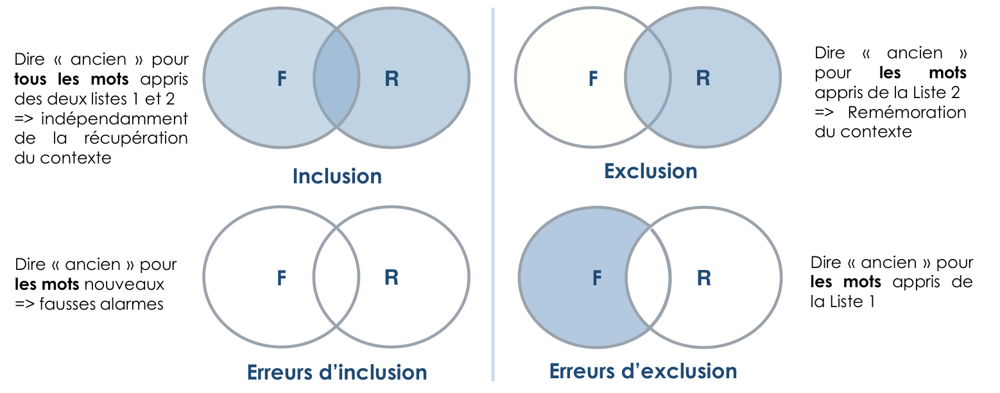
À partir de ça on peut calculer la part de récupération et familiarité dans ce paradigme :
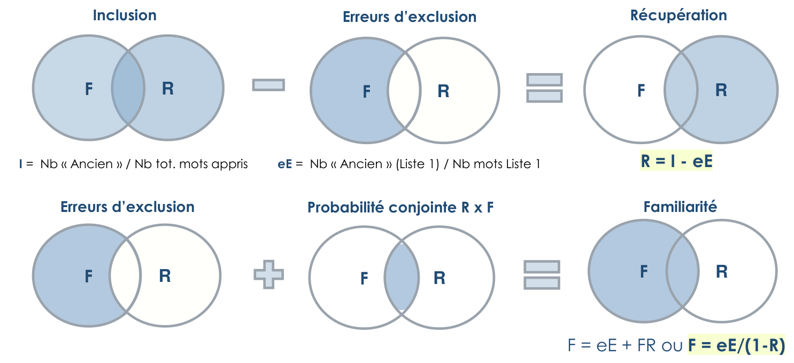
On va donc reprendre le but de la première étude avec ce paradigme. On a donc deux groupes de patients, sains et Parkinson. On comparer l’utilisation des deux mémoires : pas de différence pour la récollection, mais les patients Parkinson utilsent beaucoup moins la familiarité (en \(d'\)).
2.3. Phénomènes quotidiens
Nos résultats sont donc assez robustes, avec 2 méthodes dfférentes on voit différentes observations. C’est donc une méthode un peu plus objective, car ce n’est pas les personnes qui jugent mais nous qui déduisons à partir des personnes.//
2.3.1. Faux souvenirs
Shopping mall
Expérience de “shopping mall” qui est une étude où on se demande si on peut implanter un souvenir qui n’a jamais existé. On est allé voir les familles des participants pour les interroger sur des épisodes de leur enfance, et pendant le test, on rajoute un épisode faux, qui décrit un enfant en détresse qui s’est perdu dans un centre commercial.
La tâche est que les participants ont reçu des descriptions de 4 souvenirs issus de leur enfance (trois vrai un faux). Ils devaient écrire ce dont ils se souvenaient de chaque. Ils le faisaient lors de deux entretiens (avec ce rappel et une évaluation de la clarté de 1 à 10). 25% des participants y ont cru, mais les faux souvenirs restent moins détaillés.
Imaginer un évènement puis s’en souvenir
Autre expérience, “inflation par l’imagination”, où on fait 2 séances espacées de 2 semaines :
- 40 événements, “est-ce que c’est arrivé y’a 10 ans ?” jugé de 1 à 8, dont 8 improbables
- Imaginer 4 événements jugés improbables, puis remplir à nouveau le questionnaire (car le premier était “perdu”)
La certitude que l’évènement s’est déjà produit augmente plus souvent pour les événements imaginés. Comment ça pourrait marcher ? On propose qu’imaginer et se souvenir sont toutes des simulations construites à partir des mêmes éléments stockés (détails d’expériences passées, schémas). On pourrait donc faire une confusion de source. Une fausse récollection n’est pas équivalente à l’absencde du contenu en mémoire.
Le paradigme DRM
16 listes de 15 mots entendus, tous associés à un mot critique jamais présenté. Reconnaissance : “ancien ou nouveau ?”, si ancien, remember/know. Résultat : le mot critique reçoit autant de réponses “remember” que les mots réellement entendus. Les mots de la liste activent le mot critique par association. Si le monitoring de sa source échoue, il est attribué à tort à la liste, soit une fausse récollection.
On relie différents éléments en mémoire mais ce sont des situations probable, et imaginer des choses ferait des liens entre des éléments probables. Donc, plus on répète ces expériences, on rajoute des détails, on juge un évènement plausible. Donc plus c’est détaillé et probable plus on y fait confiance.
Paradigme DRM qui montre qu’on peut avoir une sensation très forte de familiarité alors qu’on a pas vu un item.
2.3.2. Amnésie infantile
L’amnésie infantile est l’incapacité à se souvenir des événements vécus dans les premières années la vie, il y a très peur de souvenirs avant 3 ans. Étude der Peterson montre que l’âge des premiers souvenirs d’enfance se décale vers une période plus tardive vers le temps, les souvenirs précoces des plus jeunes enfants sont instables et souvent vite oubliés, et les souvenir des enfants agés sont lpus conservés, reconnus et rappelés de façon cohérente.
L’hypothèse principale est que la maturation du cerveau fait que des zones se développent de manière hétérogène, surtout pour le cortex préfrontal et l’hippocampe.
3. La mémoire autobiographique
3.1. L’empan de vie et le pic de réminiscence
La mémoire autobiographique prend en compte la mémoire sémantique ET épisodique. On va parler du pic de réminiscence pour expliquer la théorie d’organisation de mémoire autobiographique. Puis, on va parler du soi, et présenter le modèle central su Self Memory System, puis exemples concrets des troubles de la mémoire autobiographique.
La mémoire épisodique n’est pas la même chose qu’autobiographique. C’est un système dynamique pour stocker les souvenirs personnels et connaissances dans un hiérarchie, portée par l’identité et le soi.
On donne des mots et on demande aux gens de récupérer des souvenirs spécifiques de leur passé. Mais la difficulté est d’évaluer si le souvenir est vrai ou faux. Mais on s’en fiche, dans la mémoire autobiographique, on sait que la mémoire est une reconstruction du passé, et on ne va pas vérifier les contenus de ces souvenirs. On se rend compte qu’il y a amnésie infantile, puis pic de réminiscence (15 à 25 ans). Celui-là se retrouve dans toutes les tâches de ce genre, en excluant quelques différences individuelles.
Un article a tenté d’expliquer cet effet, en explorant les types de souvenirs. On prend des gens et leur demande les évènements les plus importants de l’histoire du monde au cours de leur vie. Et on retrouve aussi cet effet. On a donc un effet systématique du pic de réminiscence. Et ce n’est pas un test de mémoire autobiographique. Pareil pour les connaissances de culture générale. Pareil si on demande aux gens leurs albums préférés et plein de trucs.
Mais pourquoi ? 5 théories.
- Combinaison des effets de nouveauté et primauté
- Explication neuropsychologique : lié à la maturation du cerveau, on a pas de très bonnes de structures de stockage avant 20 ans
- Explication d’identité : la période de pic de réminiscence est importante pour la formation du soi. Théorie stadiste pour expliquer le développement de la personalité. Et c’est débile
- Explication adaptative : c’est l’âge important pour la reproduction
- Approche narrative : prend en compte le récit de notre vie. Un script culturel de vie désigne un ensemble de repères temporels et d’événements de vie socialement partagés (par exemple : tomber amoureux, se marier, avoir un enfant), considérés comme typiques et normatifs dans une culture donnée. Ces scripts influencent la façon dont nous organisions et rappelons nos souvenirs autobiographiques.
Donc on fait une étude que je n’ai pas écoutée et on a un pic de réminiscence surtout d’évènements positifs, et à partir de 31 ans la vie est horrible.
3.2. Le soi - The Self
3.2.1. Effet de référence à soi
Le “soi” à différentes définitions, et en recherche c’est plutôt une définition objective, de choses qui nous définissent. Il y a plusieurs manières de le mesurer dans le contexte dans la mémoire.
Effet de référence à soi : test où on encode les informations où on encode en relation à autre ou soi. Encoder par rapport à nous-même nous permet de beaucoup mieux organiser les informations. Participants encodent 80 adjectifs (2 conditions d’encodage bloqués) : référence aux autres (“est-ce que ce mot décxrit Einstein ?” -> yes/no) ou à soi (“est-ce que ce mot me décrit ?” yes/no). Les résultats yes/no ne sont pas importants, mais quelle catégorie d’information, on a le plus encodé. Et on se souvient donc beaucoup des choses encodées par rapport à soi.
Pour chaque aspect de notre identité, on aurait une population de souvenirs regroupée autour de ça. On a donc utilisé le TST (twenty-statements tests), fait par les sociologues pour mesurer l’identité, ou description de la personne. On a pris ces identités et demandé de récupérer les souvenirs liés aux aspects de l’identité.
C’est pas l’âge qui compte mais les relations entre évènemnts et identité. Donc l’idée c’est que les souvenirs autobiographiques sont regorupés aux moments clés de la formation d’identité, quelque soit l’âge.
3.2.2. SMS de Conway (système de mémore du soi)

Modèle self-memory systeme de Conway : on a une base de données autobiographiques, et le “soi de travail” en ref blague à Baddeley. Ça serait un soi temporaire. C’est un modèle constructiviste de la mémoire, mais c’est un problème, car il y a des liens bidirectionnels donc le soi va impacter les souvenirs stockées, et les souvenirs récupérés vont influencer le soi. C’est donc très difficile à tester.
On a une mémoire autobiographique qui serait une construction mentale très riche faite d’une combinaison de mémoire épisodique qui donne une image sensorielle très proche de ce qu’on a vécu, et du Self à Long Terme. Il y aurait un schéma d’organisation des mémoires autobiographiques, sur les périodes de vie (j’étais en thèse, en couple avec Tess…).

Comment lire les deux figures : (même modèle, deux niveaux : l’architecture à gauche, la récupération à droite). /!\ j’ai utilisé de l’ia sinon impossible de comprendre lol désolé……. /!\
Figure de gauche, la construction : un souvenir autobiographique n’est pas stocké d’un bloc, il est assemblé. Le système de mémoire épisodique fournit une image sensorielle proche du vécu ; cette image est indexée par le Self à long terme, qui contient les connaissances autobiographiques de base (schéma historique personnel, périodes de vie, événements généraux) et le self conceptuel (script personnel, self possible, croyance). Les doubles flèches = circulation dans les deux sens.
Figure de droite, la récupération, à lire par le bas :
- le working self est le moteur de la recherche, entre mémoire de travail et self à long terme ;
- la recherche remonte la hiérarchie périodes de vie → événements généraux → détails spécifiques (flèches roses), avec des allers-retours (flèches rouges) ;
- le format du souvenir dépend du niveau où on s’arrête : souvenir spécifique (détails), souvenir répété (événement vécu plusieurs fois), souvenir étendu (qui couvre une période de vie) ;
- l’accès direct permet de tomber directement sur les détails spécifiques, sans remonter la hiérarchie.
Les diapos ne légendent pas les flèches roses et rouges : le sens ci-dessus est une lecture de la figure, pas du cours.
3.2.3. Perturbations de la mémoire autobiographique et le soi
- Confabulation : génération de faux souvenirs, pour combler trous de la mémoire ou identité
- Fugue dissociative
- Alzheimer : lien entre fonctions exécuives et la mémoire autobiographique. Impact sur l’identité, on trouve des baisses sur une mesure de “l’intensité de l’identité”. Mais c’est corrélationnel.
Mais l’identité à une composante sémantique et épisodique, il est très très rare de tout perdre.
4. La métamémoire
4.1. Définitions
Bons exemples de métamémoire est le mot sur le bout de la lampe qui est deux choses : Échec de la récupération, mais avec une recherche de celle-ci. On utilise ce sentiment pour orienter la recherche en mémoire. C’est la petite voix de la métamémoire.
La métacognition est le contrôle et évaluation de nos propres processus cognitifs. La métamémoire est la métacognition pour la mémoire. C’est très utilisé pour étudier la conscience, mais vient du développement dans les années 80. Flavell, psychologue stadiste, proposait qu’il y a des processus prédéterminant pour le développement, surtout fonction permettant la régulation et l’orchestration des processus cognitifs. Ça a soutenu les approches types “apprendre à apprendre”.
Il y a les connaissances métacognitives, qui sont les connaissances générales acquises, et les expériences métacognitive, qui sont les connaissances en rapport avec une tâche en cours. Ces dernières comprennent fluence, déjà-vu.
Modèle très connu de la métamémoire :

Entre les deux niveaux de mémoire, ce sont les processus représentant les flux d’informations entre les niveaux de traitements. Cette boucle a donc la capacité d’optimiser les processus de mémorisation.
4.3. Théories des delayed JOL
4.3.1. Théorie de l’accessibilité
On a des prédictions très peu précises, un gamma même légèrement négatif. Mais il y a une différence entre mémoire sémantique et épisodique : uniquement la mémoire épisodique est altérée. Mais comment expliquer tout ça en termes de théories ?
L’approche d’accessibilité de Koriat dit que pour les JOLs il y a plusieurs indices qu’on peut utiliser pour nos jugements métacognitifs. Certains sont plus ou moins intéressants pour la mémoire et plus ou moins en lien avec les expériences métacognitives :
- On a des indices intrinsèques comme les caractéristiques des items. On peut donc pendant une phase d’encodage utiliser ces facteurs pour évaluer notre performance (c’est long, c’est en anglais, c’est un prénom…)
- Indices extrinsèques (est-ce qu’il y a du bruit, combien d’items j’ai à mémoriser…)
Ces deux indices sont de la métacognition car c’est un contrôle de haut niveau mais moins cool car pas de retour direct de la trace dans la mémoire. Les indices mnémoniques sont l’évaluation du niveau d’apprentissage des items, ressentis donnés par la trace en direct.
Deux possibilités pour l’origine des JOL et FOK dans ce modèle. Il y aurait 3 types d’indices sur lesquels on se base :
- Intrinsèques : caractéristiques des items
- Extrinsèques : caractéristiques de la tache
- Mnémoniques : évaluation du niveau d’apprentissage des items

Le modèle a 2 possibilités :
- Impact des facteurs intrinsèques et extrinsèques médiés par les indices mnémoniques
- Impact des facteurs intrinsèques et extrinsèques par médiation des indices mnémoniques, et direct
Les indices mnémoniques :
- La familiarité avec l’indice : dans une tentative de rappel où il faut faire une prédiction pour la suite, on va utiliser la familiarité pour faire une prédiction du rappel de cette information. Permet une réponse rapide.
- La facilité perçue d’encodage et de récupération (fluente : “encoding and retrieval fluency”)
- Informations partielles : même si on sait pas vraiment, on peut relier quelque chose de relié. Ça fait appel à la remémoration.
Patients d’alzheimer ne peuvent pas préidre la reconnaissance future d’un item oublié.
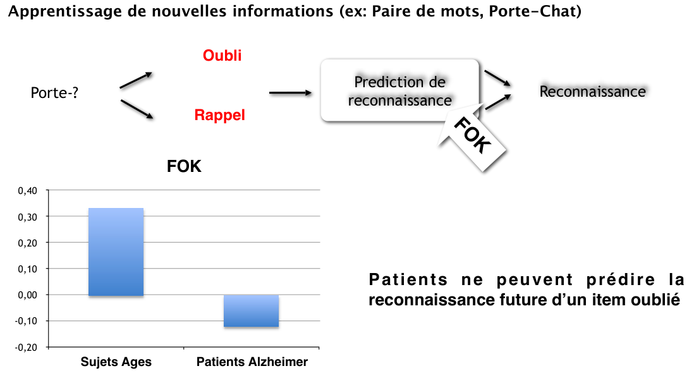
On fait le tour des processus dans la mémoire qui sont métacognitifs, soit pour faire un jugement sur paires de mots avec indices donnés, les processus utilisés pour faire des prédictions sont les processus reliés à la mémoire et la reconnaissance. C’es processus de haut niveau sont connaissancres et expériences basées sur la reconnaissance te processus mnésiques déjà existants. Les jugements métacognitifs utilisent des processus disponibles.
5. L’inhibition
5.1. L’oubli
Idées importantes cherchant à exlpiquer l’oubli :
- La trace se dégrade avec le temps
- Perturbation de la récupération - disponibilité (car on peut pas être sûr qu’on “oublie” pour de vrai)
- L’oubli serait une interférence
- Inhibition : processus actif de suppression
5.2. Qu’est-ce que l’inhibition
Ce n’est pas une perte passive, mais une suppression active. Il y a des processus qui existent pour diminuer l’activation des informations dans le système. L’inhibition serait un mécanisme actif de suppression des éléments distracteurs afin de laisser disponible l’efficacité des traitements pour la cible. Elle serait également un phénomène adaptatif, car son effet sur les temps de réponse dépend de la pertinence de l’information portée par le stimulus.
L’oubli induit par la récupération (RIF) est un phénomène montrant que la récupération d’une information peut supprimer ou bloquer temporairement la récupération d’autres informations liées. Cela montra la compétition entre des items en mémoire.
Inhibition de la mémoire épisodique
FIX: oublié de noter modèle théorique
Oubli induit par la récupération (RIF) : paradigme montre que processus de récupération d’une chose inhibe récupération d’autres informations. On apprend des items de différentes catégories sémantique. On va rappeler en continu des informatiosn dans une liste, et pour assurer. J’ai écouté mais le but c’est juste de récupérer certaines informations.
FIX: j’écoute pas la tâche demander à tess

???????????////////////
Plusieurs possiblités pour cet effet :
- Ce n’est pas de l’inhibition
Modèle de suppression des caractéristiques : on trouve des chevauchements entre les catégories, qiu montre par exemple que tomate peut rentrer dans la catégorie “fruits” ou “choses rouges”. Sang et tomates étaient étudiés dans la phase d’encodage comme choses rouges. Dans la phase test, on doit générer tous les fruits qui étaient dans la liste initiale. On teste l’activation de tomate avec l’indice fruit (et non rouge qui été utilisé pour sang). On a une inhibition du rappel de tomate même avec l’autre indice.
On trouve toujours une inhbition, donc on trouve otujours que le rappel est diminué pour tomate même si on utilise pas la catégorie originale (“rouge”).
Sang et toamtes partagent certaines caractéristiques.
Points noirs activés points clairs inhibés. Reestlats c’est que toamte et fraise sont inhibé au même niveau.
Donc l’inhbition eput travers les catégories, peu importe l’indice. C’est la représentation qui est inhibée, et ça va traverser les catégories elon els caractéristiques.
Oubli dirigé est un paradigme où on fait genre qu’on a donné la mauvaise liste, donc on demande d’oublier, et on donne une autre liste. Puis on fiat test de mémorisation sur les 2. Le résultat n’est pas important pour la première liste, c’est qu’on a une meilleur performance pour la deuxième liste, il y a donc bien eu un oubli de la première liste.
Conclusions : la métam
4.2. Comment mesurer la métamémoire ?
Pour mesurer ces processus dans le cadre de la reconnaissance :
4.2.1. Judgement of learning (JOL)
Le JOL (Judgement of Learning) est la capacité à prédire le rappel d’un item lors de l’apprentissage. Les JOLs peuvent se faire immédiatement après l’encodage (immediate JOLs) ou après un délai (delayed JOLs). Généralement, on le fait item par item en paires de mots
Nos prédictions avec les JOLs sont beaucoup plus précises après un délai. Et cet effet est la base de beaucoup de théories en métamémoire. Donc pour la mesurer dans cette situation, il faut avoir une mesure de précision : un bon niveau est de savoir prédire notre performance, quels sont les mots mieux encodés que les autres. On peut donc faire une corrélation (“gamma score”) qui regarde association entre prédictions et performances pour chaque individu. Et ce gamma score est bien plus haut après un délai.
Comment ça fonctionne ? C’est évident : si on doit aller vite, l’information reste en MdT donc il est dur de savoir si on va la perdre ou pas, alors que le JOL différée se base uniquement sur la MLT (plus précis). Le JOL est basé sur la récupération de l’information.
4.2.2. Feeling of knowing (FOK)
FOK est la prédiction de reconnaissance d’items non récupérés en mémoire. // Le mot sur le bout de la langue en est un cas extrême. Elle nous aide à orienter une recherche pour pouvoir retrouver l’item.
Mode de prédiction : échelle de pourcentage, ou prédiction binaire. C’est une bonne mesure car ça représente quelque chose de la vie quotidienne, mais on retrouve la même chose que pour le JOL : on a une prédiction item par item et personne par personne ???
On peut faire exactement la même chose dans la mémoire sémantique (avant, épisodique). C’est un paradigme idéal.